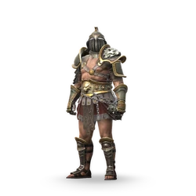
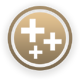

Штрафник

Редкость: Common
Пол: Male
Фракция: Legion
Энергия: Shadow
Класс: Easy
Добыча: Rift Keys and Chests
| Название | Редкость | Изображение |
|---|---|---|
| Неплательщик | Обычный | |
| Лидер | Редкий | |
| Хулиган в белом | Эпичечкий | |
| Сэр-Милорд де Айронклад | Эпичечкий | |
| Чемпион ямы | Сезонный | |
| Львинокоготь Каратель | Сезонный |  |
| Опытный гладиатор | Сезонный |
| Название | Редкость | Изображение |
|---|---|---|
| Надежные перфораторы | Обычный | |
| Необычные Башеры | Обычный | |
| Сотрясение | Обычный | |
| Его Прогулочные Перчатки | Обычный | |
| Измельчители пасти | Обычный | |
| Гранд Гловс | Обычный | |
| Перчатки дворянина | Обычный | |
| Жестокие вышибалы | Редкость | |
| Яростные Кулаки | Редкий | |
| Разрушители смысла | Редкий | |
| Кулаки Лазурной Волны | Редкий | |
| Жнецы Отрешенности | Редкий |  |
| Двигатели, направленные прямо в лицо | Эпичечкий |
| Название | Описание | Изображение |
|---|---|---|
| Врожденное упрямство | В начале каждого раунда Броненосец получает 5 зарядов Упрямства. |  |
| Упорство | Дистанционные атаки противника сделают Броненосца временно непобедимым. | |
| Берсерк | Получив 20 зарядов упрямства, Броненосец начнет наносить большой дополнительный урон. | |
| Передышка в тени | При входе в форму Тени Броненосец потратит все свои Заряды Упрямства, восстановив здоровье каждого из них. |  |
| Адреналин | За каждые 5 полученных зарядов упрямства атака Броненосца нанесет критический урон и сломает блок противника. Эффект исчезнет, если этот удар промахнется. | |
| Как скала | Броненосец не падает при получении критической атаки и получает 3 заряда упрямства. | |
| Нокаутировать | Если Броненосец получит урон, находясь в состоянии неуязвимости, его следующая атака нанесет критический урон. | |
| Феноменальное упрямство | Если у Броненосца менее 30% здоровья, он может постепенно получить 10 зарядов упрямства. |  |
| Вечное Упрямство | Броненосец теперь может получать неограниченное количество зарядов упрямства. |  |
| Высокий болевой порог | Заряды упрямства усиливают защиту от теневых способностей и их альтернатив. | |
| Судьба силы | У героев вашей команды повышен критический урон. |  |
| Судьба Сопротивления | Герои в вашей команде имеют повышенную защиту от теневых способностей и их альтернатив. |  |